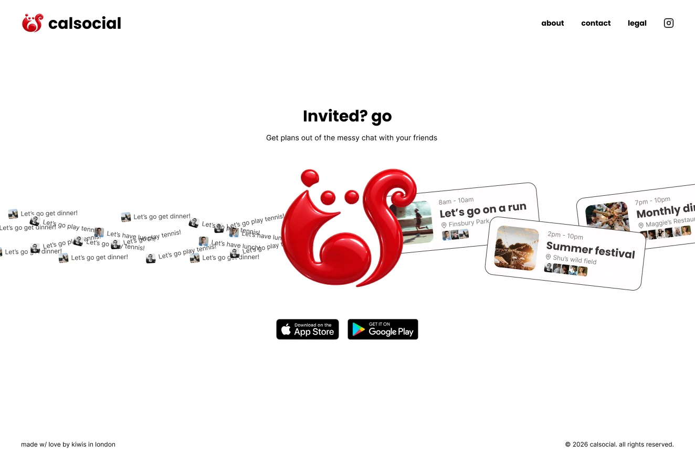
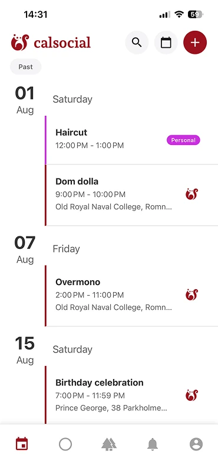
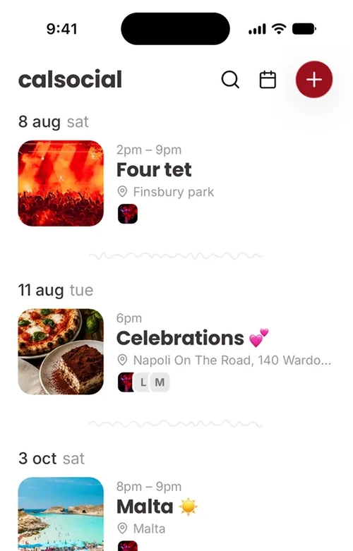
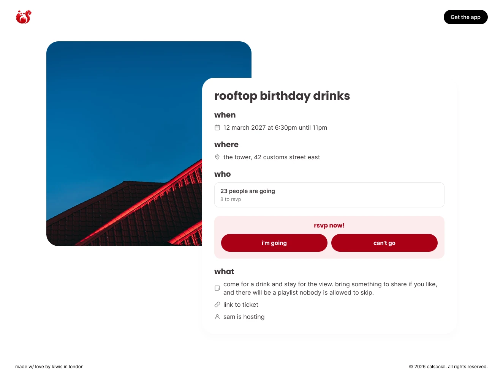
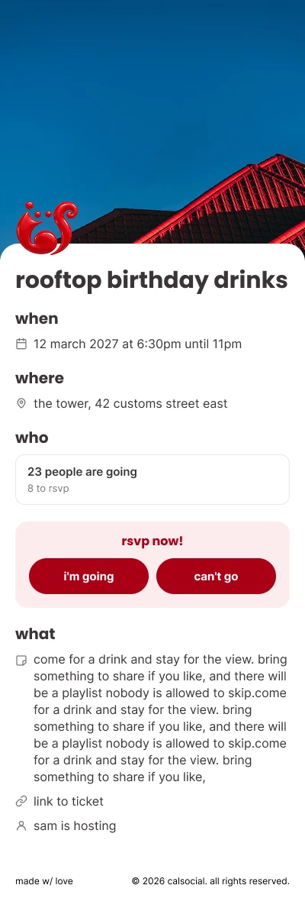

calsocial
A friends-first social calendar. Leading a full visual and UX refresh to pull event planning out of chaotic group chats.

Overview
calsocial is a calendar built around the people you actually make plans with. I joined as founding designer, leading the visual and UX refresh across the app and the web.
Two things have shipped so far. The first was the screen everybody opens. The second was the reason a lot of them stopped opening it.
The problem
Plans start in a group chat and die there. Somebody suggests dinner, forty messages happen, and by the time anyone scrolls back the date has moved twice and two people think it is off.
- The calendar we had treated a night out like a dentist appointment: a rule, a time, a line of grey text
- And you could only invite people who had already downloaded the app, which is never everyone you are making the plan with
The home screen
First job: make the calendar look like the thing it holds. The old list was read date first, and every event carried the same weight whether it was a haircut or your best friend's birthday.
The redesign leads with the photo and the people going, because a plan with your friends is recognised long before it is read. Dates step back into the flow instead of running the layout.

Before: a list of rows, read date first

After: led by the photo and who is going
Inviting everyone else
The loudest thing users told us had nothing to do with the calendar. You could make a plan, but you could only invite people who were already on calsocial, so every real invite ended up back in the group chat we were trying to get them out of.
Every event now has a page on the web. Anyone can open the link on whatever they are holding, see when, where, who is going, and RSVP with their phone number: no download, no account, no wall in front of the thing they were invited to.

On a laptop

On a phone
The part I like most happens later. When someone who RSVP'd on the web finally installs the app, the event they said yes to is already in their calendar, already linked to the people they said yes with. The first screen they ever see is their plan, not an empty state.
Where it's at
Both are live and the work is still moving, so there is no tidy retrospective yet. The fastest way to see it is the product itself.
Want to see where it has landed so far, or hear how the refresh is going?
Visit cal.social